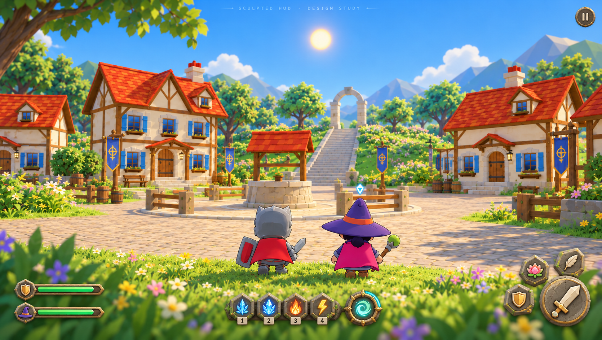
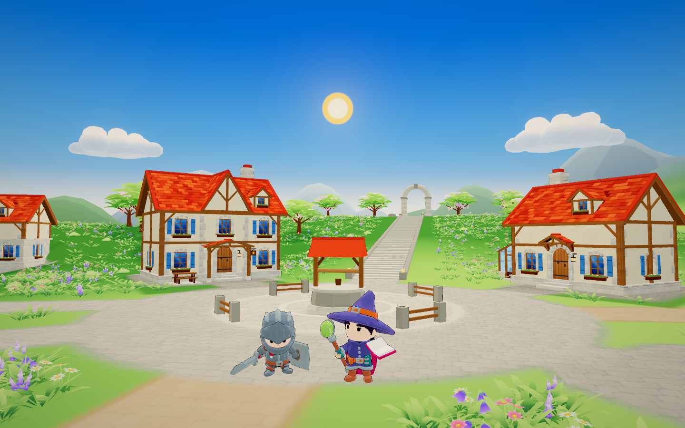

Are we okay?
Your life. Your partner’s life. Shield and downed status only when relevant.
THE FINISHED GAME / UI DIRECTION 03
Small things carved from this world. Clear when you need them. Quiet when you don’t.
Read the detailed production plan →
Explore the rough nine-scene storyboard →

EVERY ELEMENT EARNS ITS PLACE
Your life. Your partner’s life. Shield and downed status only when relevant.
Your abilities, their cooldowns and shared ultimate readiness. Only your role’s actions.
A nearby interaction, a prayer in progress, or a partner needing help.
A minimap is not part of this first design. Use the valley’s landmarks and a partner direction cue; add navigation only if playtesting shows you get lost. Room setup belongs in the lobby. Connectivity appears in play when there is a problem.

Historical screenshot, not a fresh capture. It shows why we are simplifying; it does not prove the present game looks exactly like this.
NOT JUST A PICTURE OF DEPTH
These controls are real 3D meshes in this page. Stone bases, raised symbols, brass edges. Press one; turn the depth slider. This is a UI material/layout prototype, not a playable game.

Tap an ability token to see its proposed feedback.
Desktop: attack, evade and jump use mouse/keys. Their permanent buttons disappear. Keep E, Q, R and the Mage’s four spell tokens.
Tablet: thumb movement on the left, large invisible hit areas around small sculpted actions on the right. Expand this preview on a tablet to judge actual reach.
3D art may be compact; its hit target must not be. Target sizes in the final game: at least 48 CSS px for secondary touch actions, 64–80 px for attack, and clear spacing. This embedded preview scales down on phones and is not a touch-ergonomics certification.
Render screen-anchored meshes through an orthographic HUD camera in the existing renderer. This keeps the art steady when the player camera moves. Raised icons, health fills and cooldown arcs are geometry. Use the valley’s cel palette and restrained depth.
Transparent DOM hit areas and accessible labels sit over the meshes. Subtitles and essential small text stay crisp. World-space prompts belong only near an interactable or partner. UI art does not inherit combat shake, obscure the centre, require perspective guessing or rotate continuously.
This page uses a separate, on-demand Three.js canvas for isolation. The eventual game should share its renderer; this is not an engine architecture change.
THE HUD FOLLOWS THE MOMENT
A BREATH OF SPACE
Health settles into two quiet marks. Abilities stay compact. A small prompt appears only when you approach something useful.
Proposed behavior · choose a moment to update the 3D preview above
One ceremony at a time. First accepted speaker keeps the turn. The other sees “Your beloved is praying.” Their mic stays off.
A small lotus at her feet, a short ribbon and a clear health gain. No levitation or sky explosion. Feet stay grounded.
Deliberate movement or dodge cancels recording; release submits. A disconnect or service failure cancels safely, without punishment. Late results cannot revive a cancelled ceremony.
One prayer ID, one result. One voice line. One application of healing, buffs or punishment on both screens.
All four rules above are proposals to settle, not features claimed as implemented. On the server: idle → recording → judging → response → idle. A bounded timeout releases a stuck ceremony. The partner stays in control; recording does not secretly take over their character.
ONE READABLE LANGUAGE OF POWER
Ice, fire or lightning carves one small sigil into the Knight’s status. The blade itself tells the bigger story.
Current: Mage spells grant an ordinary infusion, normally 12s.Fire and water share one split emblem. Ordinary spells should not overwrite this stronger state.
Current: blessing 22s, miracle 30s; ultimate normally 16s.One linked-ring token fills. It becomes clearly ready. One shared activation, one cost.
Proposal: display actual readiness, not a permanent percentage label.Close to the beloved.
Small, brief, grounded.
Lotus opens.
Power reaches the weapons.
The full shared spectacle.
The sky finally earns its turn.
That strip expresses visual scale, not final VFX geometry. Existing combat numbers are not rebalanced here. Success tiers, resurrection eligibility, proximity limits and buff replacement still need gameplay approval.
Four native sword swings · charged attack · evade · jump · partner intercept (E) · shared ultimate (Q) · commune (R).
Three-step staff attack · heavy nova · evade · jump · Frost Lance / Shatterlance / Cinder Fall / Storm Lance · partner infusion (E) · shared ultimate (Q) · commune (R).
On tablet, preserving access to these actions is mandatory. Heavy-attack input must be settled alongside the proposed hold-to-continue combo behavior; one hold gesture cannot mean both.
THE PATH TO A FINISHED HUD
Approve role layouts, contextual prompts and input behavior. Resolve prayer ownership and heavy-attack controls before drawing final icons.
Exit: a screen-by-screen map of explore / fight / pray / downed / pause.Place simple meshes over the real game, using the existing renderer. Keep touch targets separate from visual size.
Exit: readable at 1600×900 and 1440×960, with no overlapping controls.Build a small reusable stone-and-brass token kit. Shared geometry, atlas and minimal materials; no new environment art.
Exit: actual device measurements show the total scene still meets the project’s draw-call, triangle and frame-time gates.Connect health, cooldowns, infusion priority, shared resonance and prayer state. Clear duplicate results and expired buffs.
Exit: two-client scenario tests; no UI claims an action is ready when it is not.Record a real encounter and prayer on desktop and Pad 7. Check hands, sightlines, motion, latency and sound. Use the project’s fresh blind review gate.
Exit: evidence, user approval and an atomic implementation checkpoint.